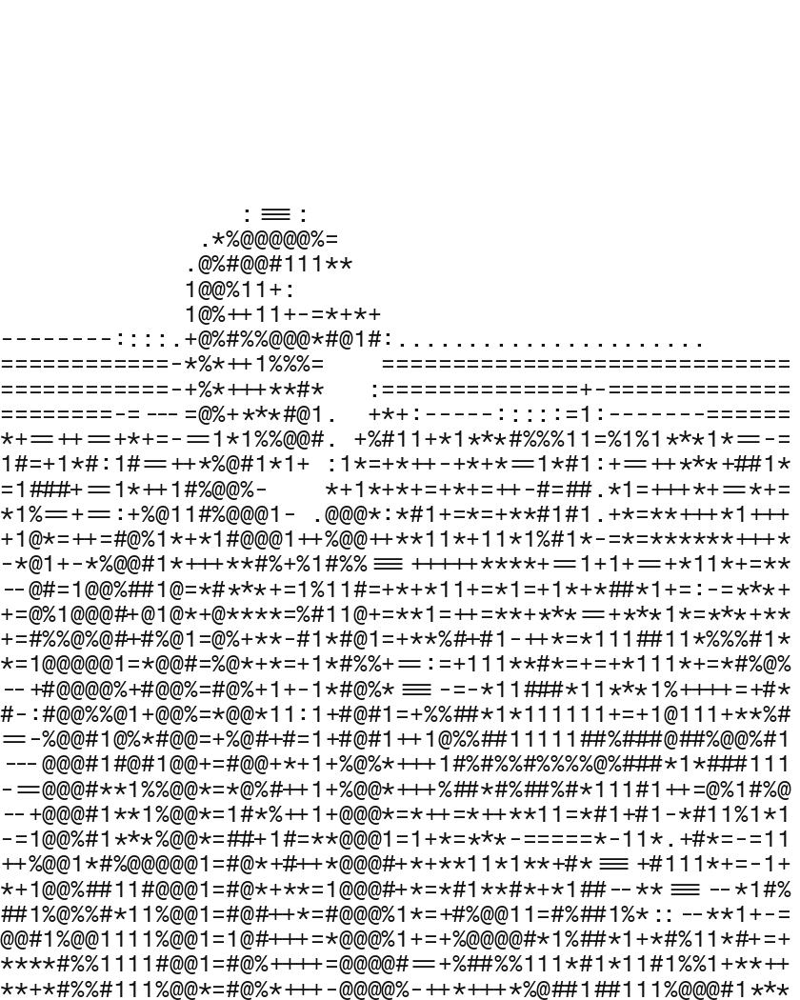

I am a Master’s student in Computer Science at Université Paris-Saclay.
I am interested in computational social science, and in particular in predictability: how far human and social behaviour can be predicted from data, and what sets the limits.
万翔
Master’s student in Computer Science at Université Paris-Saclay, interested in computational social science and predictability.

I am a Master’s student in Computer Science at Université Paris-Saclay.
I am interested in computational social science, and in particular in predictability: how far human and social behaviour can be predicted from data, and what sets the limits.